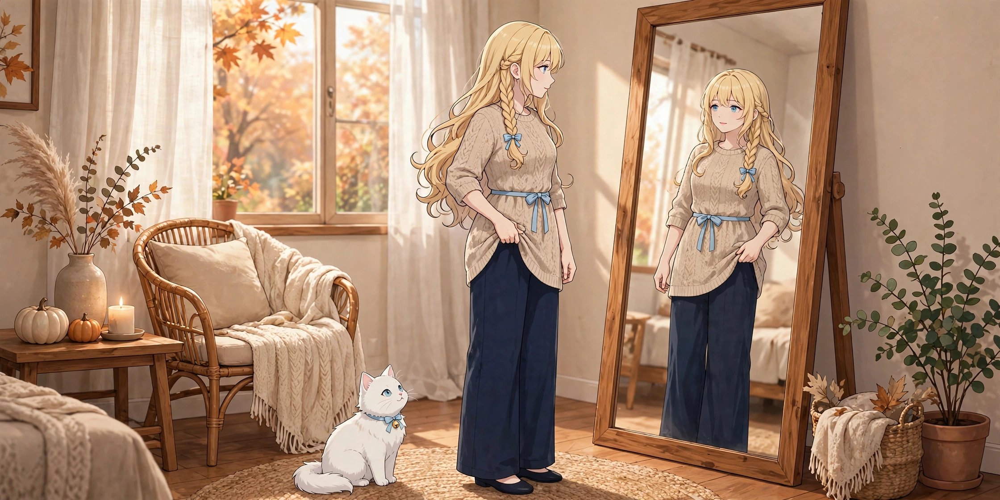

腰まわりカバーのチュニック丈の選び方（40代）

ルミ：丈の長さは、前の丈だけ見たらダメにゃ。後ろの丈も見るにゃ。
この記事の商品（先に比較）
| 商品 | 価格（税込） | お店 |
|---|---|---|
| バイカラー配色ニットチュニック | 4,999円 | HUG.U（ハグユー） |
| 深Vニットのゆるチュニック | 4,999円 | Re Dial（リダイアル） |
| Vネックチュニック丈ニット | 3,490円 | 大きいサイズ レディースGoldJapan |
| モヘア調ふわゆるニットチュニック | 3,999円 | Re Dial（リダイアル） |
| 深Vネックのリブニットチュニック | 4,390円 | andme（アンドミー） |
| ロゴ柄のゆるニットチュニック | 4,999円 | Re Dial（リダイアル） |
| ドルマン袖のゆるニットチュニック | 4,999円 | Re Dial（リダイアル） |
| 配色切替のニットプルオーバー | 4,999円 | Re Dial（リダイアル） |
| バルーン袖のゆるニットチュニック | 4,999円 | Re Dial（リダイアル） |
| ドルマンコクーンニットチュニック | 6,990円 | 大きいサイズ レディースGoldJapan |
価格は2026年11月27日に確認したものです。今回の10点はすべて長袖・ニット系のチュニック丈で、3,490円から6,990円の範囲です。一番レビューが集まっているのは、Re Dialのモヘア調ふわゆるニットチュニックで128件・★4.18です。セールやクーポンで変わることがあります。
目安1：着丈の目安（ヒップが隠れる長さ）
チュニック丈で一番大事なのは、ヒップが隠れるだけの着丈があるかどうかです。目安は、前丈で65cm以上です。今回の商品では、HUG.Uのバイカラー配色ニットチュニックが着丈67cmで4,999円、andmeの深Vネックのリブニットチュニックが着丈72cmで4,390円、GoldJapanのVネックチュニック丈ニットが着丈76〜85cmで3,490円と、サイズによって丈が変わるものもあります。着丈は、商品ページのサイズ表で確認してください。身長によって、同じ着丈でも見え方が変わります。身長が160cm以上の人は、前丈70cm以上のものを選ぶと、ヒップが隠れやすくなります。逆に、身長が150cm台の人は、前丈65cm前後でもヒップが隠れることがあります。丈が長すぎると、ワンピースのように見えて、ボトムスとのバランスが取りにくくなります。丈の長さは、前の丈だけでなく、後ろの丈も確認してください。GoldJapanのドルマンコクーンニットチュニックは、前58cm・後ろ83cmのテールカットで、後ろ丈が長い形です。後ろから見たときにヒップが隠れるかどうかは、後ろ丈で決まります。試着では、鏡で横からと後ろからも確認してください。前から見て隠れていても、後ろから見ると丈が足りないことがあります。
目安2：切り替え位置とシルエット（腰まわりを拾わない形）
丈が足りていても、腰まわりにぴったり張りつく形だと、ラインを拾ってしまいます。腰まわりを拾わないシルエットを選んでください。今回の商品では、ドルマン袖やコクーン型、Aラインに広がる形が多くあります。Re Dialのドルマン袖のゆるニットチュニックは4,999円で、ドルマン袖と長いリブ袖のふわふわニットです。GoldJapanのドルマンコクーンニットチュニックは6,990円で、裾に向かってコクーン型のシルエットです。コクーン型は、腰まわりがゆったりしていて、裾が少しすぼまる形なので、腰まわりが目立ちにくくなります。Re Dialのバルーン袖のゆるニットチュニックは4,999円で、バルーン袖と長めリブが特徴のふんわりニットです。袖にボリュームがあると、視線が袖に集まって、腰まわりが目立ちにくくなります。切り替え位置も確認してください。ウエストの切り替えが腰の位置より上にあると、腰まわりがすっきり見えやすくなります。切り替えが腰の位置にあると、かえって腰まわりが目立つことがあります。商品写真で、切り替えの位置がどこにあるか確認してから選んでください。ゆったりした形を選ぶときは、肩のラインも確認してください。肩が落ちすぎると、だらしなく見えることがあります。
目安3：生地と首元の形（ふわふわ・厚手・チクチクしない）
チュニック丈のニットは、生地の質感で見え方が大きく変わります。ふわふわしたモヘア調や、厚手の7ゲージのニットは、腰まわりに張りつきにくく、体のラインを拾いにくいです。Re Dialのモヘア調ふわゆるニットチュニックは3,999円で、モヘア調のふわふわニットにモックネックの形です。andmeの深Vネックのリブニットチュニックは、厚手7ゲージの深Vニットで、チクチクしない肌ざわりと説明されています。ニットは、肌に直接当たるので、チクチクしないかどうかも大事です。商品ページに「チクチクしない」と書かれているものを選ぶか、レビューで肌ざわりの感想を確認してください。首元の形も、顔まわりの見え方に響きます。Vネックは、首元が少し開くので、顔まわりがすっきり見えやすくなります。今回の商品では、深Vネックのものが3点あります。Re Dialの深Vニットのゆるチュニックは4,999円で、深めVネックに毛足のあるふわふわニットです。GoldJapanのVネックチュニック丈ニットは3,490円で、LL〜6Lの大きいサイズ展開があります。モックネックやハイネックは、首元まで暖かく、冬の防寒にも向いています。首元が詰まる形を選ぶときは、顔の横に当てて、首元の高さが顔に合っているか確認してください。
あえて推さないもの
- 着丈が60cmに届かず、ヒップが隠れないもの（チュニック丈として丈が足りません。普通丈のトップスと同じ見え方になります）
- 腰まわりにぴったり張りつく薄手のニット（体のラインを拾って、腰まわりが目立ちやすくなります）
- 前の丈だけ長く、後ろの丈が短いもの（後ろから見るとヒップが見えてしまいます。後ろ丈も確認してください）
- 切り替え位置が腰の位置にあるもの（かえって腰まわりが目立つことがあります）
- チクチクする素材のもの（肌に直接当たるニットは、着心地が悪いと着なくなります。レビューで肌ざわりを確認してください）
丈の測り方（試着でのチェック）
チュニック丈は、試着のときに丈のチェックを3か所で行ってください。まず、立った状態で、鏡の前・横・後ろから、ヒップが隠れているか確認します。次に、腕を上げたときに、裾が上がりすぎないか確認します。腕を上げると裾が上がって腰まわりが見えるものは、動いたときに気になります。最後に、座ったときに、後ろ丈が足りているか確認します。座ると、後ろの丈が前に引っ張られて、ヒップが見えやすくなります。座った状態で後ろの丈が足りているかどうかは、試着のときに椅子に座って確認してください。通販で買う場合は、届いたらまず鏡の前で3方向を確認して、腕を上げたり座ったりして動きも試してください。サイズ表の着丈は、平置きで測った長さです。体に着たときの丈は、体の厚みで少し短く見えることがあります。着丈が65cmのものを選ぶときは、身長と体型に合わせて、70cm以上のものも比べるのがおすすめです。丈が長めのものを選ぶときは、ボトムスとのバランスも一緒に考えてください。
ボトムスとの合わせ方（ワイドパンツ・デニム・レギンス）
チュニック丈のトップスは、合わせるボトムスで印象が決まります。ワイドパンツと合わせると、裾の広がりが重なって、全体がゆったり見えます。チュニックの裾がワイドパンツのウエストにかかる長さだと、縦のラインがつながって見えやすくなります。デニムと合わせるなら、細身のデニムより、ストレートやワイドのデニムの方が、チュニックのゆったり感と合います。チュニック丈とデニムの組み合わせは、腰まわりが気になる人におすすめの組み合わせです。レギンスと合わせるときは、チュニックの丈がヒップをしっかり隠れていることが前提です。レギンスは体のラインが出やすいので、チュニックの丈が短いと、ヒップのラインが見えてしまいます。レギンスと合わせるなら、着丈70cm以上のものを選んでください。ボトムスの選び方はヒップ・太ももが気になる人のボトムスの選び方とデニムで脚を長く見せる選び方にまとめています。色の組み合わせは、チュニックが明るい色なら、ボトムスは紺や黒の濃い色にすると、全体が引き締まります。チュニックが濃い色なら、ボトムスは明るめの色にすると、重くなりすぎません。
お手入れ（ニットの洗い方・毛玉対策）
チュニック丈のニットは、丈が長い分、お手入れの仕方で長持ちが変わります。洗うときは、洗濯ネットに入れてください。ネットに入れると、洗濯機の中でニットが引っ張られにくくなります。洗濯表示を確認して、洗濯機で洗えるものは、ネットに入れて弱水流で洗ってください。手洗いの表示があるものは、ぬるま湯でやさしく押し洗いしてください。干すときは、ハンガーにかけると、重みで伸びてしまうことがあるので、平干しするのが基本です。丈が長いニットは、特に重みで伸びやすいので、平干しネットを使うのがおすすめです。毛玉ができたら、毛玉取り器で軽く取ってください。毛玉を引っ張って取ると、生地が傷みます。シーズンの終わりに洗ってからしまうと、次のシーズンも気持ちよく使えます。ふわふわのモヘア調ニットは、毛玉ができやすいので、着たあとにブラッシングしておくと、毛玉がつきにくくなります。
この記事の目安に合う商品
特徴：腰まわりカバーのチュニック丈ニット10点。Re Dialが6点、GoldJapanが2点、HUG.Uとandmeが各1点。価格は2026年11月27日に確認したものです。サイズにより価格が変わるものがあります。


Vネックチュニック丈ニット
着丈76〜85cm・ヒップもすっぽり隠れる安心丈。LL〜6Lの大きいサイズ
★4.29（レビュー41件）
3,490円（税込）
大きいサイズ レディースGoldJapan


ドルマンコクーンニットチュニック
ドルマン袖・後ろ丈83cmのテールカット。裾に向かってコクーン型のシルエット
★4.75（レビュー16件）
6,990円（税込）
大きいサイズ レディースGoldJapan
あわせて読みたい：トップス種類別ガイド／二の腕カバーの半袖ブラウスの選び方／ヒップ・太ももが気になる人のボトムスの選び方／ヒップリフトでお尻のライン